Spring诞生时是Java企业版（Java Enterprise Edition，JEE，也称J2EE）的轻量级代替品。无需
开发重量级的Enterprise JavaBean（EJB），Spring为企业级Java开发提供了一种相对简单的方法，通
过依赖注入和面向切面编程，用简单的Java对象（Plain Old Java Object，POJO）实现了EJB的功能。
虽然Spring的组件代码是轻量级的，但它的配置却是重量级的。一开始，Spring用XML配置， 而且是很多XML配置。
Spring 2.5引入了基于注解的组件扫描，这消除了大量针对应用程序自身 组件的显式XML配置。
Spring 3.0引入了基于Java的配置，这是一种类型安全的可重构配置方式， 可以代替XML。
在Spring经历大规模的应用之后，开发人员逐渐总结出一套在开发应用时必须配置的样板，也就是SpringBoot。
SpringBoot可以理解为自己使用Spring配置好了基本框架后的成品，但这步已经交由SpringBoot完成了。SpringBoot的出现使开发人员可以更加专注于业务逻辑。
SpringBoot有一个理念叫做约定大于配置。当然，约定的前提是经历了大量的实践得出的。就好像常用的算法，设计模式一样，是一种经验的总结。
微服务：一组小型应用通过HTTP的方式进行沟通的开发思想
单体应用：ALL IN ONE
单体应用的不足：
随着业务逻辑的不断更新和迭代开发，起初的小型应用会不断膨胀，当应用达到一定规模量时，敏捷开发和部署维护的效率就会举步维艰。也就是说，单体应用的可持续性能力较弱。
微服务的解决方案：
通过分解巨大的单体式应用使得可持续性开发和优化等扩展能力增强。
自由的开发技术选择。（不同组件的功能可以使用更加合适的技术实现）
微服务架构的不足：
微服务本身的分布式系统导致固有复杂性：组件之间消息传递的通讯成本。
迭代开发所遗留的耦合问题依然存在：在修改某一个服务时，其他与之相关的服务不可避免的也要相应修改，但较单体应用来说，业务逻辑更清晰，耦合度更低。
总结：相对来说，单体式开发更加适合简单轻量的应用，微服务虽然仍旧存在不足，但更适合构建复杂应用开发。
根据演化原则，微服务是单体应用在业务发展到一定规模的演化策略。微服务的出现并不是替换单体，而是在单体应用无法满足业务需求的情况下破局的一种解决方案。
【举个栗子】
2003年4月，淘宝秘密起始于湖畔花园，购买了一个LAMP（Linux+Apache+MySQL+PHP）架构的网站。
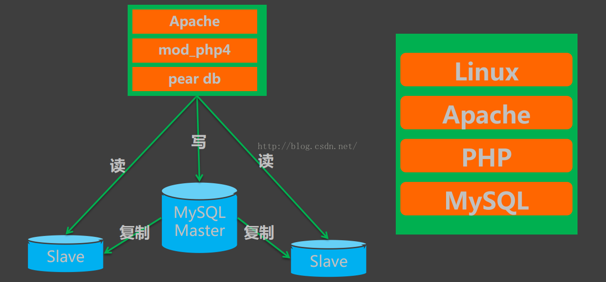
（2008年后）服务化/中心化的业务系统架构
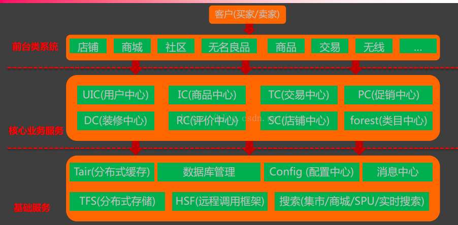
LAMP架构是最简单的架构，但是同时也是最合适当初淘宝的架构。在淘宝无人问津的时代，几个亿的并发量又有什么意义呢？最初的LAMP到使用Oracle数据库，经历重量级EJB框架的淘宝，最终实现服务化的架构模式。
技术的作用是实现业务，业务的发展才是技术革新的标准。
更多淘宝技术发展可参考：https://blog.csdn.net/wp1603710463/article/details/50166797
微服务架构是这个时代最火的技术，但却不是业务的起点。
环境：JDK8
开发工具：Intellij IDEA
SpringBoot版本：2.1.8
Maven和Tomcat都是使用IDEA内置的。
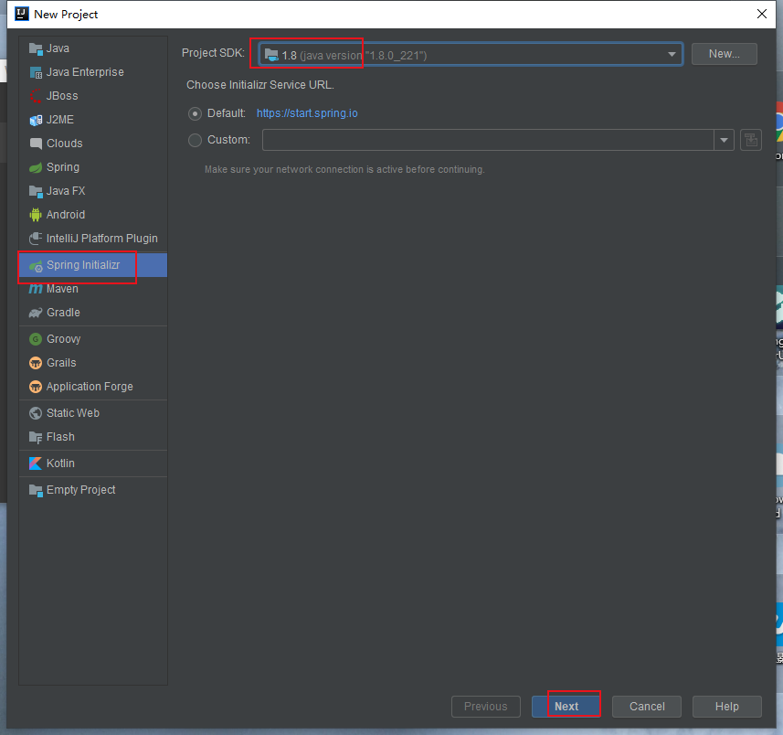
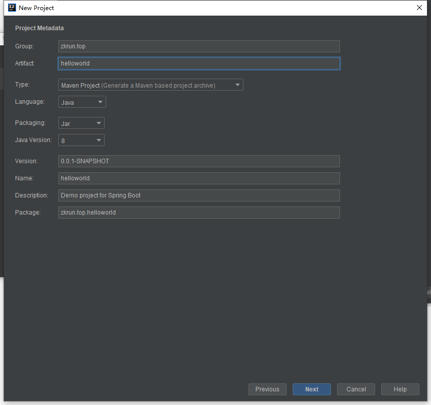
选择web模块测试
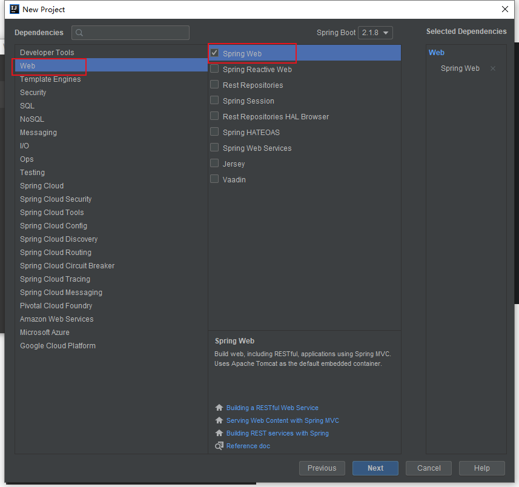
创建Controller测试
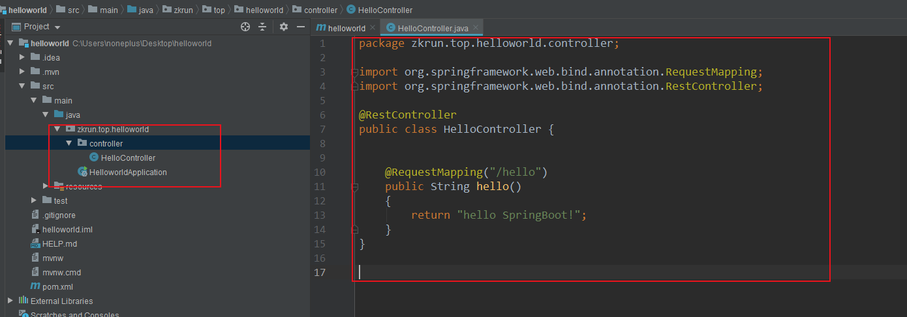
package zkrun.top.helloworld.controller;
import org.springframework.web.bind.annotation.RequestMapping;
import org.springframework.web.bind.annotation.RestController;
@RestController
public class HelloController {
@RequestMapping("/hello")
public String hello()
{
return "hello SpringBoot!";
}
}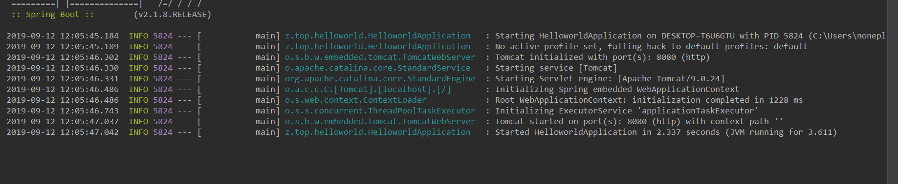
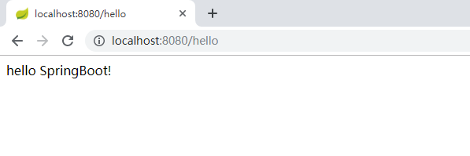
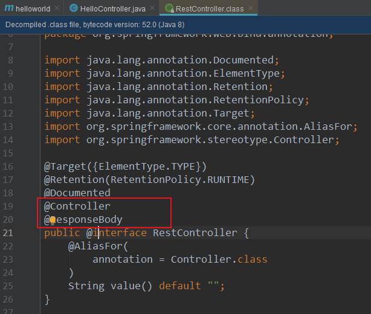
<?xml version="1.0" encoding="UTF-8"?>
<project xmlns="http://maven.apache.org/POM/4.0.0" xmlns:xsi="http://www.w3.org/2001/XMLSchema-instance"
xsi:schemaLocation="http://maven.apache.org/POM/4.0.0 https://maven.apache.org/xsd/maven-4.0.0.xsd">
<modelVersion>4.0.0</modelVersion>
<parent>
<groupId>org.springframework.boot</groupId>
<artifactId>spring-boot-starter-parent</artifactId>
<version>2.1.8.RELEASE</version>
<relativePath/> <!-- lookup parent from repository -->
</parent>
<groupId>zkrun.top</groupId>
<artifactId>helloworld</artifactId>
<version>0.0.1-SNAPSHOT</version>
<name>helloworld</name>
<description>Demo project for Spring Boot</description>
<properties>
<java.version>1.8</java.version>
</properties>
<dependencies>
<dependency>
<groupId>org.springframework.boot</groupId>
<artifactId>spring-boot-starter-web</artifactId>
</dependency>
<dependency>
<groupId>org.springframework.boot</groupId>
<artifactId>spring-boot-starter-test</artifactId>
<scope>test</scope>
</dependency>
</dependencies>
<build>
<plugins>
<plugin>
<groupId>org.springframework.boot</groupId>
<artifactId>spring-boot-maven-plugin</artifactId>
</plugin>
</plugins>
</build>
</project>
<parent>
<groupId>org.springframework.boot</groupId>
<artifactId>spring-boot-starter-parent</artifactId>
<version>2.1.8.RELEASE</version>
<relativePath/> <!-- lookup parent from repository -->
</parent>spring-boot-starter-parent依赖的父项目spring-boot-dependencies定义了经常使用依赖的版本，所以在以后导入依赖通常是不需要写版本号的（除了一些特殊的没有被声明的包）
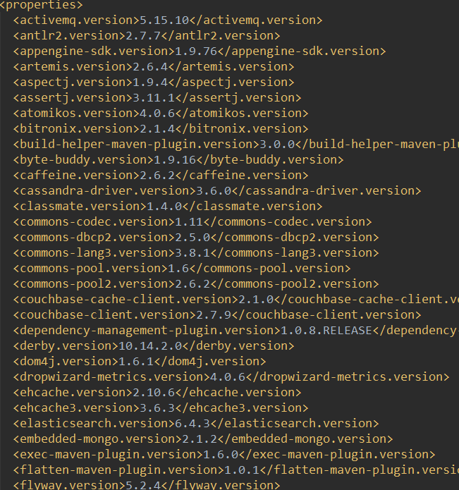
比如说web场景启动器包含了诸如Tomcat，webmvc等场景启动器
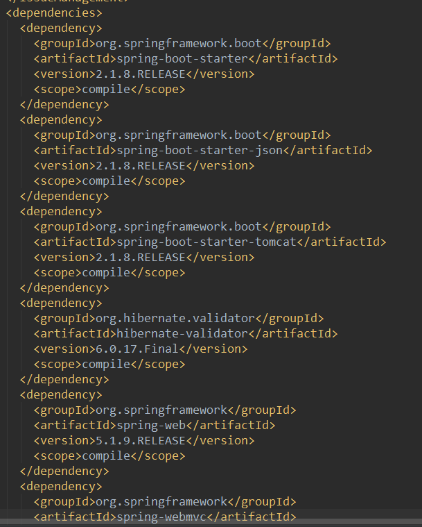
webmvc场景启动器又包含了beans，core，web等jar包
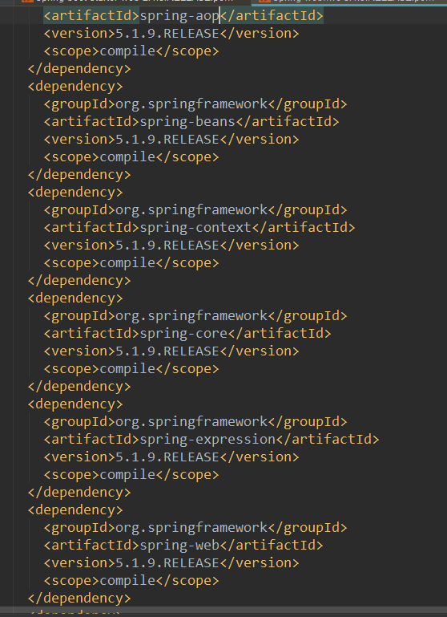
场景启动器是将开发时常用的jar包根据使用的场景进行了一次整合，使得开发更加的方便，快速。
【同时一定程度上解决了自己引用jar包导致的冲突，但也会导致jar包不可见性，使得开发者在熟悉底层原理的到路上越走越远，有利有弊吧】
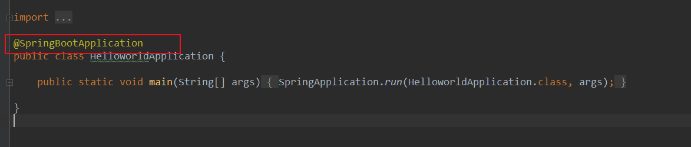
@SpringBootApplication包含@SpringBootConfiguration@EnableAutoConfiguration@ComponentScan等注解
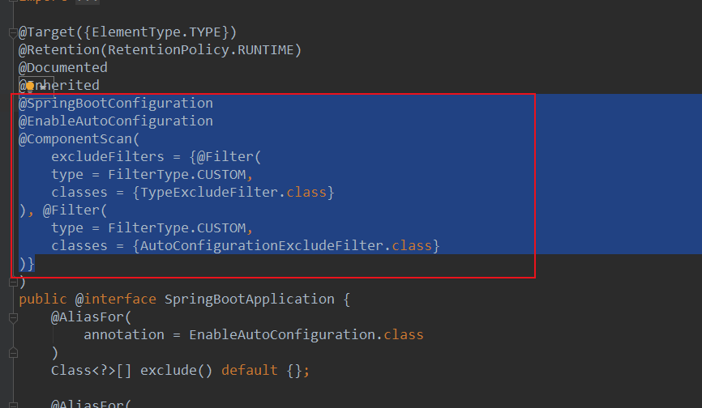
@SpringBootConfiguration包含@Configuration
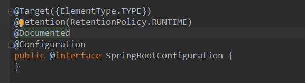
@Configuration包含@Component
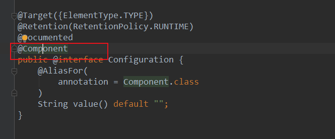
@EnableAutoConfiguration开启自动配置包含
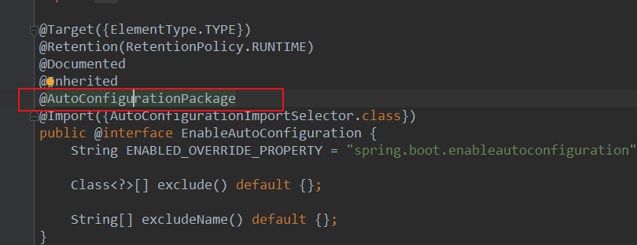
@AutoConfigurationPackage包含
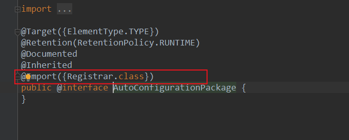
将主配置类（@SpringBootApplication标注的类）的所在包及子包里面所有的组件扫描进IOC容器。
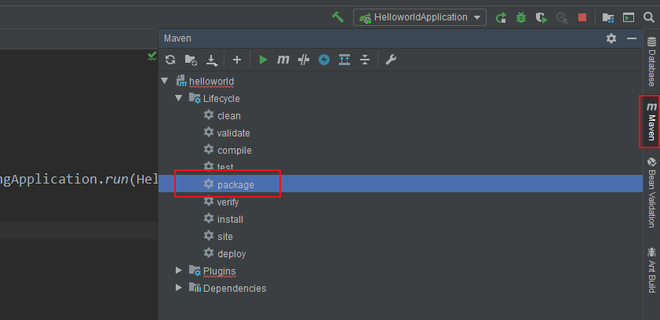
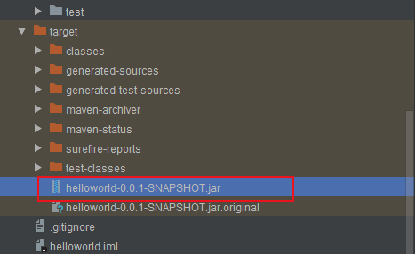
找到jar所在目录
java -jar helloworld-0.0.1-SNAPSHOT.jar
nohup java -jar helloworld-0.0.1-SNAPSHOT.jar //以后台方式运行访问：http://localhost:8080/hello